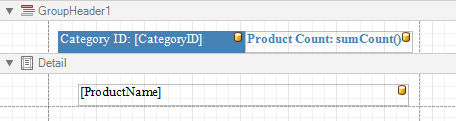
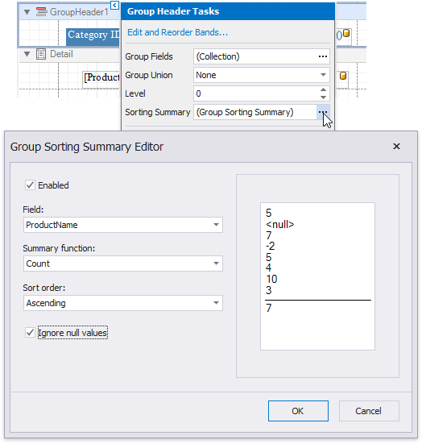
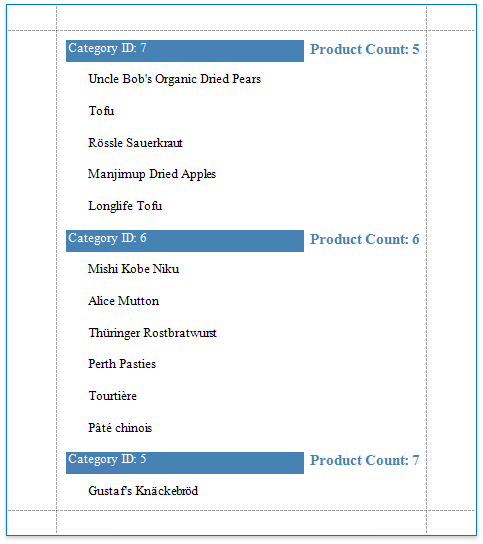

Sort Groups by a Summary Function's Result
This tutorial explains how to sort groups by a summary function result, in particular, by the number of records groups contain.
Create a new or open an existing data-bound report.
You cannot apply grouping unless your report is bound to a data source.
Group the report by the required data field, calculate the record count in each group and construct the required report layout.

Click the Group Header band's smart tag, and click the Sorting Summary property's ellipsis button.
In the invoked Group Sorting Summary Editor, turn on the Enabled option, set the Field option to the data field from the Detail band, and set the Summary function to Count.

In this editor, you can also define the sorting direction for the group, as well as specify whether or not the Null values should be ignored.
Click OK to apply the changes and close the dialog.
Switch to Print Preview to see the result.
